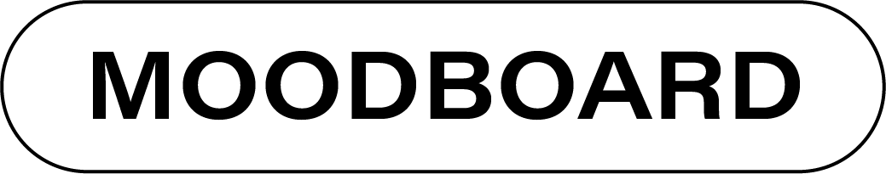

Previously as creative director, I redistributed the content created by GEN-ZINE's design team and ensured collaboration. After GEN-ZINE's Spectrum issue was published, the Editor in Chief and I met on zoom and listed some organizational changes to make. We both thought the division of work amongst teams was still too confusing, with content for the blog divided between the designers for the zine and for social media. Our solution was to divide the designers into three teams instead of two. Under this model, the entire design team could support emerging designers while continuing to produce high quality content.
Designers who were looking to cultivate their design skillsets joined the blog team. The most skilled designers were assigned to the zine team, since this platform acts as the face of the organization. Designers on the social media team were talented like the zine team but needed a little development. Content production involved hands-on critique. The social media designers received more face time with myself, the Editor in Chief, and the social media coordinator. Notably, the social media team improved more than I could have dreamed. These designers helped us establish a
USC-specific Instagram page for GEN-ZINE. The zine team also had some hoops to jump through. Our theme for the Renaissance issue was challenging both aesthetically and conceptually. These designers had to create a modern Renaissance aesthetic while adhering to an almost entirely brown color palette. These designers also went through rounds of critique to carefully craft a non-Eurocentric and fresh look at the Renaissance. Altogether, all the designers pushed themselves and produced some of the best content GEN-ZINE has published.

“A term stemming from the French definition of ‘rebirth,’ the word ‘renaissance’ encompasses multiple meanings… Change is occurring at a rapid pace. Our interconnected, globalized world, allows information to travel at a lightning speed across massive distances, while digital communications platforms allow for the seemingly constant exchange of ideas and development of discourse… It is time to stop, pause, and admire how far we’ve come while acknowledging how far we have left to go”
—CECILIA POU, EDITOR IN CHIEF OF GEN-ZINE